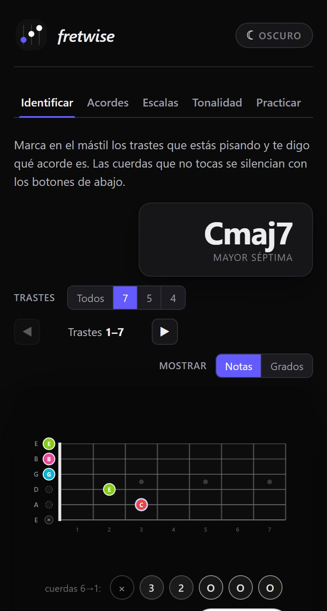
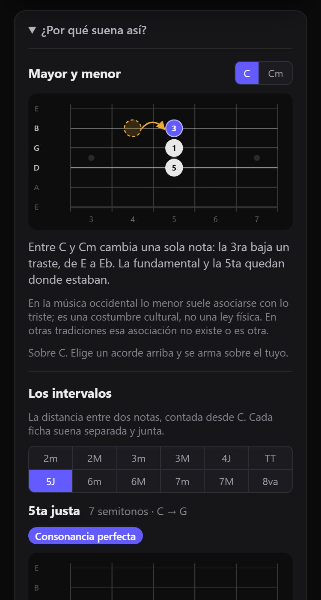
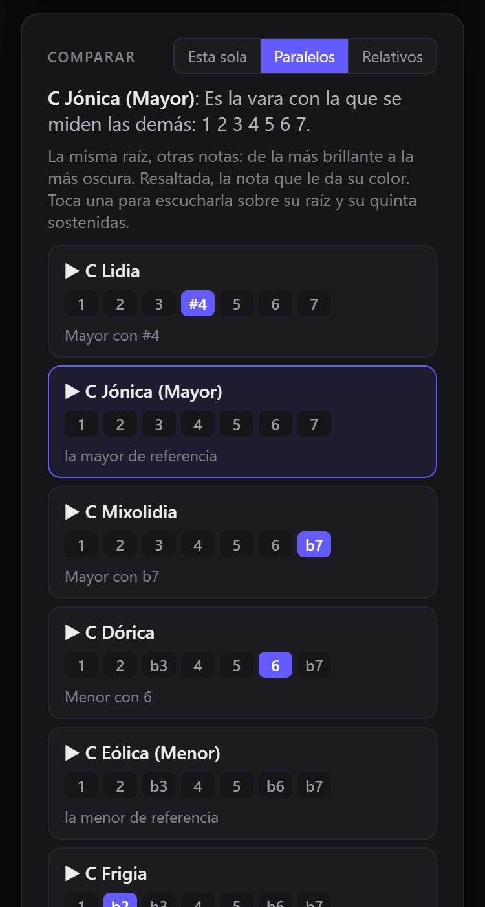
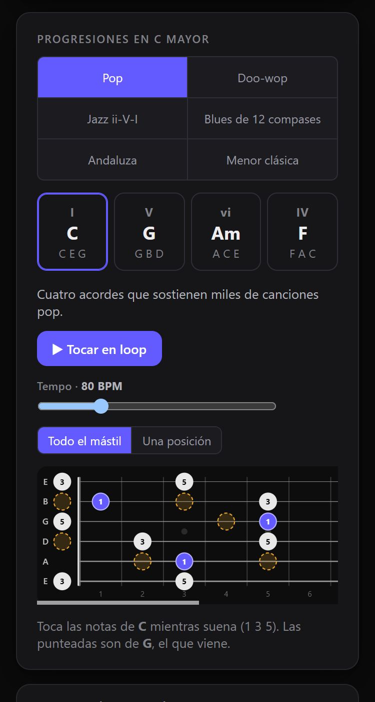
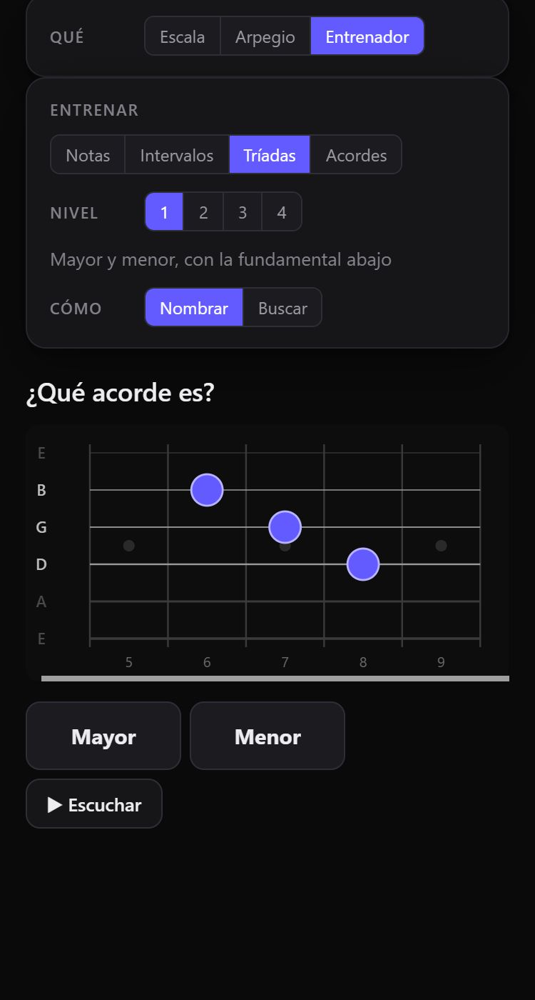

01 · Identificar
Toca. Fretwise te dice qué es.
Marca los trastes en el diapasón y te nombra el acorde, con sus notas y sus grados. Sin buscar en tablas.
Teoría musical para guitarra
Fretwise te muestra por qué cada nota, acorde y escala está donde está. Y te lo hace escuchar.

Durante años nos enseñaron la guitarra como un mapa para memorizar. Formas sueltas. Nombres sin razón. Fretwise parte de otra idea: si entiendes por qué suena, no lo olvidas.
01 · Identificar
Marca los trastes en el diapasón y te nombra el acorde, con sus notas y sus grados. Sin buscar en tablas.
02 · Acordes
Elige un acorde y mira dónde vive en cada zona del diapasón. Y si quieres saber por qué suena así, te lo explica.

03 · Escalas
Compara cada modo con su par y escucha la nota que le cambia el color. De la Lidia, la más brillante, a la Locria, la más oscura.

04 · Tonalidad
Elige una tonalidad y arma progresiones que se transportan solas. Pop, jazz, blues, andaluza.

05 · Practicar
Entrena el mástil por niveles: notas, intervalos, tríadas y acordes, con explicación cuando fallas. Escalas y arpegios con tempo.

Por qué suena
Sol7 tiene Si y Fa: un tritono, la distancia más inestable. Si sube medio tono a Do. Fa baja medio tono a Mi. La tensión se resuelve, y el oído lo sabe antes que tú.
Así explica Fretwise todo: desde la teoría, nunca con frases inventadas.
Cada nota se escribe como corresponde en su tonalidad. Parece un detalle; es la diferencia entre leer música y adivinarla.
Nada de textos genéricos: cada “por qué” se calcula desde los intervalos reales del acorde o la escala que elegiste.
Sin publicidad y sin crear una cuenta. Tu progreso se guarda en tu dispositivo.
Para quién
Deja de copiar formas. Entiende qué estás tocando desde el primer día.
Ponle nombre a lo que ya haces de oído y llévalo a todo el mástil.
Una herramienta para mostrarle a tus alumnos el porqué, no solo el dónde.
Los primeros en sumarse pagan un precio que no se repite y deciden qué se construye después.
{{PRECIO_FUNDADOR}}
Reservar mi lugarPaso 1 de 2
Te escribimos cuando haya novedades. Mientras tanto, la app ya está abierta.
Abrir FretwiseSí. La app es gratis y se usa sin cuenta. Si más adelante hay una versión paga, los anotados se enteran primero.
No: se abre en el navegador. En el teléfono, si quieres, la instalas desde el navegador (en iPhone: Compartir → «Agregar a inicio»). Queda con su ícono y abre sin conexión.
Sí. Cada botón explica qué es: en la computadora, dejando el mouse encima; en el teléfono, manteniéndolo apretado. No hace falta saber teoría para empezar.
También. Nombra inversiones y tensiones con exactitud, escribe las escalas por grado y muestra cada tonalidad de tríadas a trecenas, con las tensiones que admite cada acorde.
Sí. Cada forma tiene su link: lo mandas y el alumno ve exactamente la misma en su pantalla.
En castellano. Los acordes van en cifrado americano, el de los cancioneros: C es do, D es re, y así.
Hoy tu progreso se guarda en tu dispositivo: la app corre en el navegador y se usa sin cuenta.
Guardamos lo que escribiste en el formulario y lo usamos para contactarte sobre Fretwise. Para darte de baja, responde cualquier mensaje. El detalle está en la política de privacidad.